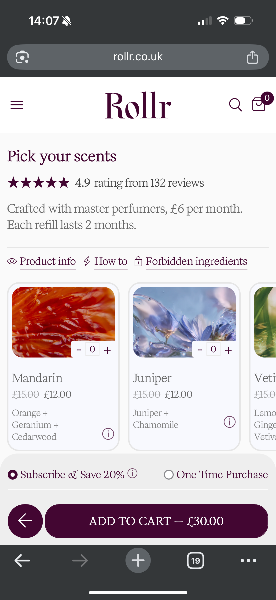
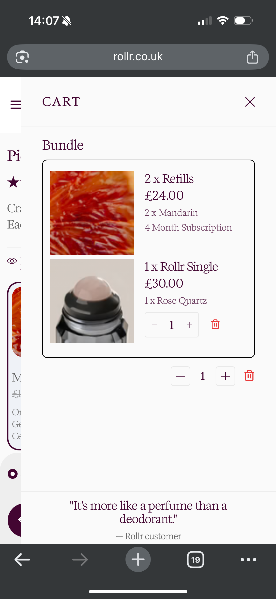
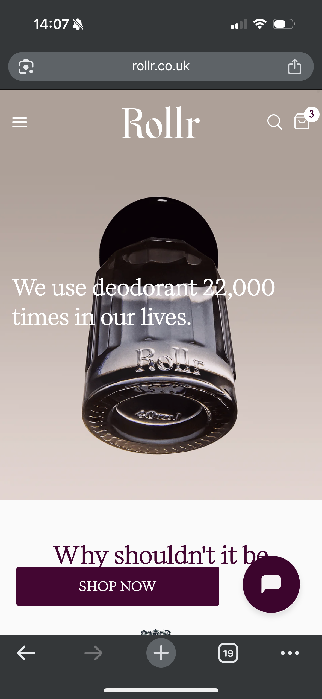
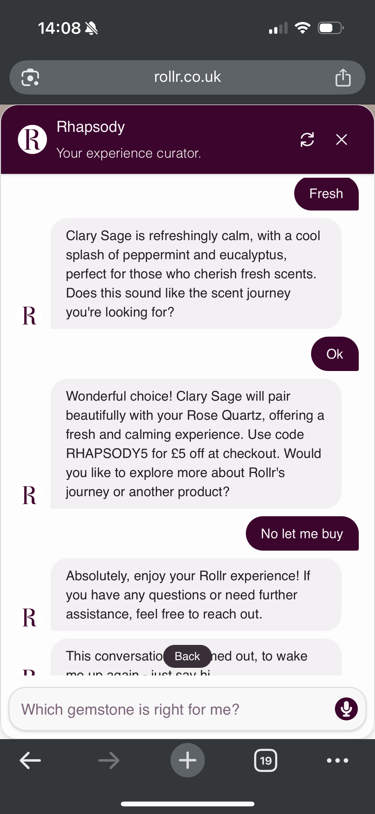
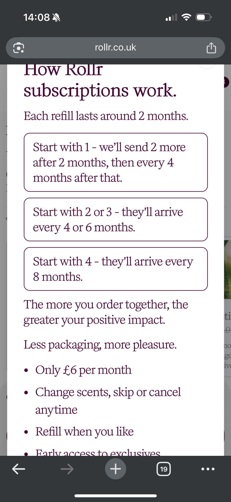
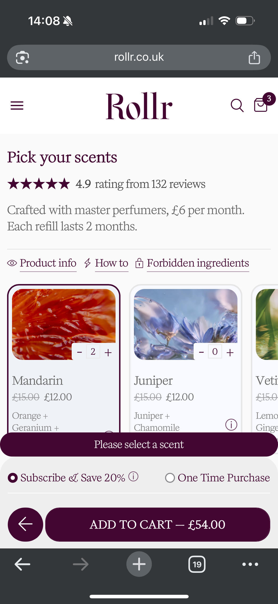

Full mobile walkthrough assessment of rollr.co.uk — from Instagram ad to checkout. 22 findings, prioritised by conversion impact.
Rollr has strong product-market fit. 127 reviews at 4.97/5, passionate testimonials, a product that people love once they try it. But the website is built for people who already love the brand, not for the cold paid traffic that makes up 75% of visitors.
The information hierarchy across the entire customer journey is broken. Beyond "it's a beautiful product," the value proposition is not clear. How does it work? Does it actually perform? How much does it cost? That information is either buried deep in the page or hidden behind sub-menus. A first-time visitor from a Meta ad can't answer those three questions within the first scroll.
Then there are the UX issues. The cart modal's checkout button is hidden behind Chrome's browser bar on mobile. A chatbot widget competes with the primary CTA before anyone understands the product. Error messages persist after resolution. The subscription info modal can't be closed on mobile.
The conversion ceiling is set by information clarity and mobile UX. Fix the story the site tells and the order it tells it in, then fix the broken interactions that stop people buying even when they want to.
Tap any finding to expand. Findings are ordered by conversion impact within each severity group.
Most of the individual findings below trace back to this one. The site tells a story about a beautiful product, but it doesn't communicate, clearly or in the right order, what the product actually is, why it works, and why someone should care beyond how it looks.
This affects everything: bounce rate, time on page, configurator entry, add-to-cart. Every other fix depends on getting this right. For cold Meta traffic that has never heard of Rollr, the first 10 seconds decide whether they stay or leave. Right now, it takes 3-4 scrolls to build a complete picture of what the product even is.
Four different prices are visible simultaneously on the scent selection step:
A first-time visitor cannot answer "what am I actually paying?" The £6/month figure splits the £12 subscription price across 2 months, but nobody explains this. The £30 on the CTA is the case price from Step 1, and it hasn't updated to reflect scent selections.
As scents are added, the total climbs to £54 for two, with messaging about four-month delivery cycles. The relationship between number of scents, delivery frequency, and total cost is unclear. There's no running total anywhere.

People leave when they can't work out the price. Every second spent doing mental arithmetic is a second closer to closing the tab.
After adding products to cart, the cart modal opens but the checkout button is completely hidden behind the bottom bar of Chrome's mobile browser. Scrolling inside the modal does not bring the checkout button into view — it only appears if the user accidentally scrolls outside the modal, which collapses the browser chrome.
This is not an edge case. This is the default experience on the most common mobile browser, for a site where 75% of traffic comes from mobile Meta ads.

People who have gone through the entire wizard, chosen their products, and decided to buy cannot find the button to pay. They're being lost at the last step.
The homepage is a brand experience page doing double duty as a landing page for cold paid traffic. The hero says "We use deodorant 22,000 times in our lives. Why shouldn't it be beautiful?" That's a brand statement. It doesn't answer any of the questions cold ad traffic actually has.
The Shop Now button isn't prominent. It sits inline and competes with the chatbot widget on mobile. There are four different CTAs across the page: "Shop Now", "Find your gemstone", "Shop Rollr", "Discover your scent." None of them say "Buy your first Rollr here."
Several CTAs reference content the visitor hasn't seen yet. "Find your gemstone" appears before the gemstones are shown. "Discover your scents" appears above the actual scent descriptions. The page asks you to act on information you haven't been given.

Worth checking bounce rate and conversion segmented by traffic source. If cold paid traffic is converting below the site average, this page is the likely reason. The first scroll needs to say what Rollr is, not just show what it looks like.
The three-step flow drives 57% subscription uptake, which is strong. The stepped structure should stay. But each step has UX issues that compound.
Lower configurator completion. People who enter the wizard but don't finish it are the biggest recoverable conversion opportunity on the site.
Every section of the site leads with beauty and luxury. The hero asks "Why shouldn't it be beautiful?" The wizard leads with gemstone descriptions. But the reviews tell a different story — "it actually works!", "I've tried everything else", "saved my sensitive skin."
After going through the entire wizard flow, there is not a single piece of information about whether the deodorant actually works, how it feels on skin, or how it interacts with the body. The product is being sold as jewellery, not as something you put on your body every day.
Efficacy is the #1 reason customers love this product. The reviews make that obvious. But the site treats it as a secondary message, buried 3-4 scrolls down.
People appreciate the aesthetics but leave unconvinced it'll actually work. For cold traffic, "does it work?" is question number one. The site doesn't answer it.
The product page is trying to be three things at once: a landing page (convince you to buy), a configurator (help you customise), and an information hub (ingredients, press quotes, how it works, reviews). Below the configurator sits a content section that's almost a mini-homepage on its own. The persuasion content appears after the purchase flow instead of supporting it.
During the wizard, it's easy to scroll past the selection step into this content zone and lose track of where you are and what you've already chosen.
Users either miss the selling content (buy from the wizard without scrolling) or get lost in it (scroll past their selections into the content zone).
A chatbot called "Rhapsody — Your Experience Curator" appears as a floating widget that competes with the Shop Now button on mobile. When opened, it runs a quiz ("Which gemstone is right for me?") before the visitor has understood what the product is.
It offers a £5 discount code (RHAPSODY5) that must be memorised — not auto-applied at checkout. After completing the quiz, closing the widget requires finding a small X button (doesn't swipe down). The code cannot be retrieved if forgotten.

Pulls attention away from the actual buying flow. The discount code friction (memorise it, type it in later) means most people who get the code probably never use it.
Clicking the subscription info button opens a large modal that's too big for the mobile viewport. The X close button is almost completely hidden. The content is a wall of text with conflicting messaging ("the more you order, the greater your positive impact" alongside pricing alongside "refill when you like") across three tabs.

People who want to understand the subscription terms are punished for trying. A modal that can't be closed feels like a trap. Many will abandon the flow entirely.
No shipping information visible anywhere before checkout. No delivery timeframes, no returns policy, no guarantee. For a £35-50 first purchase of an unfamiliar product, that's a lot of unanswered questions at the point of commitment. "Free UK Delivery" appears once, in small text, in the subscription benefits.
Unknown shipping costs are the #1 reason shoppers abandon carts. When the cost is a mystery, people assume the worst.
127 reviews at 97% five-star. The configurator shows a rating number at the top of each step, but no actual review content is visible during the purchase decision. The full reviews are buried below product info tabs, press quotes, and the how-it-works section.
These reviews are the most persuasive thing on the entire site, and they're invisible when it matters most.
The proof that could close hesitant buyers isn't there when they're deciding.
After completing the wizard and adding items to cart, navigating back to "Shop now" starts a completely fresh flow. No awareness of what's already been added. The cart icon in the header doesn't update during wizard selections (only after explicit "Add to cart").
This makes it easy to accidentally add duplicate bundles and lose track of what you've already chosen.
If someone wants to change one thing (swap a scent), they have to go through a flow that doesn't know what they've already picked.
Irregular shapes, mixed colours, inconsistent font sizes. Button fonts don't match the brand guidelines. The site feels less premium than the product and the price point.
Visual consistency is a trust signal. When the site doesn't look like a £40 product, people question whether it is one.
The header takes up too much space on mobile. On a site where the first scroll has to do a lot of selling, that's screen real estate you can't afford to waste.
Useful content is hidden behind a two-level nav path: About > FAQs. Questions like "Is it safe to use water from home?", "What does antiodorant mean?", "Is it a roll-on?" The FAQ page itself is good. The problem is nobody will find it while they're buying.
Real customer questions go unanswered during the purchase flow. Those questions don't disappear; they become reasons not to buy.
"Curious Queries" instead of FAQs. On-brand but fails the 5-second findability test for visitors looking for help. Compounds the FAQ discoverability problem.
127 reviews in a single feed with no ability to filter by scent or gemstone. Someone who has selected Rose Quartz + Vetiver wants to see reviews from that combination, not scroll through everything.
"Powered by Shopify" in the footer. Undermines the premium positioning. Quick fix.
Logos crammed into the top right, feels rushed. Limited scope for changes (standard Shopify checkout) but basic tidying is possible — brand colours, cleaner layout, fewer logos.
57% subscription uptake, targeting 66%. "Subscribe & Save 20%" doesn't translate to pounds. The benefits (free delivery, early access, cancel anytime) feel like an afterthought. The stepped flow gets people to the final step. That final step needs to close harder.
No "Buy as a gift" option despite reviews mentioning gifting. No cross-sell during checkout.
Press quotes displayed without links to the original articles. Linked coverage is more credible than unlinked quotes. Easy fix.
"Please select a scent" stays visible even after a scent has been selected. Makes you wonder whether the selection actually registered. Should clear the moment you select something.

Error messages use the brand colour instead of a distinct alert colour. Easy to miss on mobile. They're also not helpful: "Please select a scent" doesn't tell you what to do differently. Errors should stand out and point you toward the fix.
These findings will be grouped into workstreams for implementation. This matrix shows relative priority to help decide what to tackle first, not a list of independent tasks.
Rollr's product is better than Wild's in build quality and design. But Wild's purchase experience is far simpler. Rollr asks for a 3x higher first purchase (£35-50 vs £12) with a more complex buying process and fewer trust signals.
That's the tension. At this price point, information hierarchy and pricing clarity matter more, not less. Every unanswered question is a reason to leave.